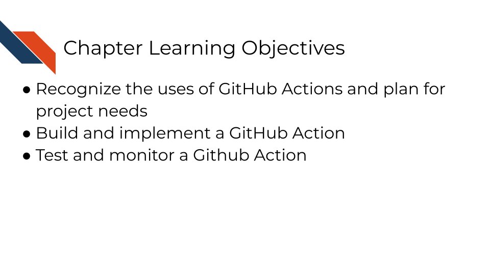
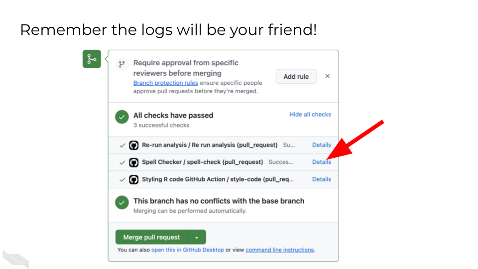

Chapter 5 Building a GitHub Action

5.1 Phase 1: Repository Setup and Planning
5.1.1 Step 1: Set Up Your Working Environment
Navigate to your capstone sandbox repository
Locate the GitHub_Action_Assignment.yml file within the GitHub_Action_Assignment directory - this is your starting template
Review the existing template to understand what’s already provided
Important: Do not change the filename from GitHub_Action_Assignment.yml. Leave the name exactly as it is. You will be moving the file’s location, but do not change its name.
5.1.2 Step 2: Create Your Working Branch
In order to isolate your work and enable the automated evaluation system this sandbox uses, you will create a new working branch.
Create a new branch for this assignment (e.g., github-action-assignment or gha-build)
Switch to this branch before making any changes
5.1.3 Step 3: Move File to Correct Location
GitHub Actions must be in the .github/workflows/ directory for Github to recognize them as a GitHub Action.
Move GitHub_Action_Assignment.yml to .github/workflows/GitHub_Action_Assignment.yml
Critical: The file must be in this exact location for GitHub to recognize it as a workflow file (and for this assignment to automatically evaluate your GitHub Action).
5.1.4 Step 4: Plan Your GitHub Action
While learning, it can be really helpful to pick an action that produces something that you can visually inspect (e.g., a report or plot) because if it is generated and looks how you expect, you can confirm that your GitHub Action is successful and doesn’t have a silent failure occurring in the background.
Decide what useful task your GitHub Action will perform
- Ideas for useful actions:
Run automated tests on your capstone code
Generate reports or documentation
Check code quality or formatting
Create data visualizations
Send notifications when certain conditions are met
Validate data files or configurations
You will want to limit the size of any data files you are putting on GitHub unless you have large file storage (GitLFS) capabilities. So if you want to run a report, create a visualization, or validate a data file, then perhaps make a small toy dataset.
5.2 Phase 2: GitHub Action Development
5.2.1 Step 5: Understand the Template Structure
Open GitHub_Action_Assignment.yml and examine the existing structure
Identify the key components:
name: - What your action is called
on: - When it should trigger
jobs: - What it should do
job-name: - an identifier of the job specifically
runs-on: - What environment to use
5.2.2 Step 6: Define Your Action’s Purpose
Choose a meaningful trigger (on:):
pull_request: - Runs when PRs are opened/updated (good for testing)
push: - Runs when code is pushed to specific branches
workflow_dispatch: - Allows manual triggering (useful for development)
schedule: - Runs on a time schedule (e.g., once a week)
Design your job steps:
Start with actions/checkout@v4 to get your repository files
Add steps that accomplish your chosen task
Include error handling and status checks
It’s important to name steps so that you can access and check outputs of those steps.
Consider and possibly emulate one of these common design strategies for various tasks. Notice how they fill out the key components and outline where the task steps will be filled in:
Fill out the GitHub_Action_Assignment.yml, including the key components, and the steps of the action (the task you chose), under run: |.
While on your branch, add any needed files (e.g., scripts or toy data) to your copy of the sandbox repository so that your GitHub Action can access them.
5.3 Phase 3: Testing and Iteration
5.3.1 Step 7: Open Your Pull Request
Key: This step triggers the GHA Assignment Eval test
Commit your changes to your branch.
Push the branch to GitHub.
Open a pull request from your branch to main.
5.3.2 Step 8: Monitor Automated Evaluation & Interpret Evaluation Results
Watch for the GHA Assignment Eval check to start running
This evaluator will test whether your GitHub Action runs successfully. The evaluator checks for common issues and provides guidance.
Wait for it to complete and comment on your PR
• Success: You’ll receive a validation code in the PR comment
• Failure: You’ll get specific error messages and troubleshooting tips
Interpret the results and proceed accordingly:
If the test’s comment provides a validation code, skip to Phase 5.
If the test’s comment contains error messages, visit Phase 4: Troubleshooting and Refinement of these instructions.
5.4 Phase 4: Troubleshooting and Refinement
5.4.1 Step 9: Debug Common Issues
Common issues to check:
YAML syntax errors: Check indentation, colons, and spacing
File location errors: Ensure file is in .github/workflows/
Permission errors: May need to add GitHub secrets or tokens (see the GitHub Secrets Assignment for more information if necessary)
Missing dependencies: Check if your chosen environment has required software
Silent failures: Verify your action actually does what you expect
![Troubleshooting tips for GitHub Actions. Tip Details General Debugging. Look out for silent errors. Actions may fail without obvious error messages. Look at the logs closely! Detailed examination of workflow logs is essential. Use workflow_dispatch/pull_request triggers for development. These triggers help test workflows during development. Print out things to test your assumptions. Add debug output to verify your workflow logic. Marketplace Actions. Read the docs carefully! Thoroughly review documentation before implementation. Try updating to later versions to fix problems.Newer versions often contain bug fixes. Avoid poorly documented or poorly maintained actions. Choose well-supported actions for reliability. Startup Issues. Check for missing essential specifications. Ensure all required parameters and configurations are present.Look for syntax issues. Verify YAML syntax and GitHub Actions syntax.Check for spacing issues.YAML is sensitive to indentation and spacing](05-building-a-gha_files/figure-html/1ExTZsKDHKM0fIi0_tB80qd8cHvqjEDyNJp-OsnvZ19o_g361b9572af4_0_382.png)
You’ll find specific error messages in the actions logs. Check them out!

![You may have to troubleshoot iteratively until your github action runs successfully. Git commit and push edits to your yml file and check your existing pull request to receive evaluation from automated assignment checks. Interpret the results. If you were not successful, troubleshoot and iterate this process as needed, checking your pre-existing pull request for new evaluation results after making additional changes. Or if you were successful in your assignment, submit the verification code to your coursera quiz (or move on to the next section if you are not using coursera or some certification method to take this course)](05-building-a-gha_files/figure-html/1ExTZsKDHKM0fIi0_tB80qd8cHvqjEDyNJp-OsnvZ19o_g36815e8f502_0_0.png)
5.5 Phase 6: Completion
If you are taking the course on Coursera:
Collect Your Validation Code
Once your GitHub Action runs successfully, copy the validation code from the PR comment. Keep this code safe for your quiz submission.
Submit Your Quiz
Go to your Coursera Graded Assignment (“Building a GitHub Action”)
Paste the validation code when prompted
Submit the quiz to get credit for your work
5.6 Suggestions for Troubleshooting and Best Practices
Remember: This assignment builds on both the containers knowledge (for choosing appropriate environments) and the GitHub Actions automation concepts. The goal is to demonstrate your understanding of continuous integration principles by creating something that automatically improves or validates your capstone project.
5.6.1 Start Simple and Build Up
- Begin with a basic action that you know will work.
- Your action should be useful but not overly complex. Focus on demonstrating GitHub Actions concepts rather than building production software.
- Test early and often to catch issues quickly.
- Add complexity gradually, testing each addition.
- Use marketplace actions: Leverage existing actions when possible.
5.6.2 Use Course Knowledge
- Reference information from the GitHub Automation for Scientists course as needed.
- Reference YAML examples from course exercises
- Apply containers knowledge:
- Choose appropriate
runs-on:environment - Consider using Docker containers if you need specific software
- Reference container images from Docker Hub if needed
- Choose appropriate
- Apply automation principles:
- Ensure your action fails appropriately when something goes wrong
- Include meaningful output and logging
- Use environment variables and secrets when needed. (Remember you may need to add the “workflow” scope to your personal access token for this assignment.)
5.6.3 Leverage the Automated Testing
- The automated evaluator provides immediate feedback
- Don’t be afraid to make multiple attempts - each iteration teaches you something
- Read the evaluator’s comments carefully for specific guidance
5.6.4 Read Error Messages Carefully
- Error messages (in the actions logs) often contain the exact solution
- Check the logs: Go to the Actions tab
 and examine detailed output
and examine detailed output - Print debugging info: Use
echocommands to verify assumptions - Google specific error messages if they’re unclear
- Copy and paste the error code and include any relevant context to a code trained LLM (e.g., Phind) for additional help.
The automated evaluation system is designed to help you learn through iteration, so embrace the feedback loop and keep refining your action until it works reliably!